From PK Values to Supply-Demand: The Physics of Glucose Modeling¶
Record
Record as of 2026-04-07. A point-in-time document; it is not kept up to date.
Date: 2026-04-07
Scope: Research evolution across EXP-001–493 (170+ experiments, 11 patients, ~180 days each)
Predecessor reports: symmetry-sparsity-feature-selection-2026-04-05.md, continuous-physiological-state-modeling-2026-04-05.md, metabolic-flux-report-2026-04-06.md, metabolic-flux-synthesis-2026-04-07.md
Executive Summary¶
This report traces how our glucose modeling framework evolved through three distinct eras — from classical pharmacokinetic (PK) features, through metabolic flux decomposition, to a full supply-demand conservation framework — and why each transition was necessary. The central finding: glucose obeys a conservation law, and that conservation law provides both predictive power and diagnostic power that neither PK features nor raw glucose can match.
The supply-demand framework decomposes every 5-minute timestep of a patient's CGM data into:
ΔBG(t) = SUPPLY(t) − DEMAND(t) + ε(t)
SUPPLY(t) = hepatic_production(t) + carb_absorption(t) [always > 0]
DEMAND(t) = insulin_action(t) [always > 0]
ε(t) = residual [diagnostic signal]
When therapy settings are correct, the residual is small and random. When settings are wrong, the residual is large and persistent. When carb data is missing, the residual becomes the implicit meal channel. This is not a new physics — it's what every AID algorithm and every diabetes simulator already computes. What's new is using it as a retrospective diagnostic and feature engineering framework for real-world patient data.
Part I: The Three Eras of Glucose Modeling¶
The Evolution¶
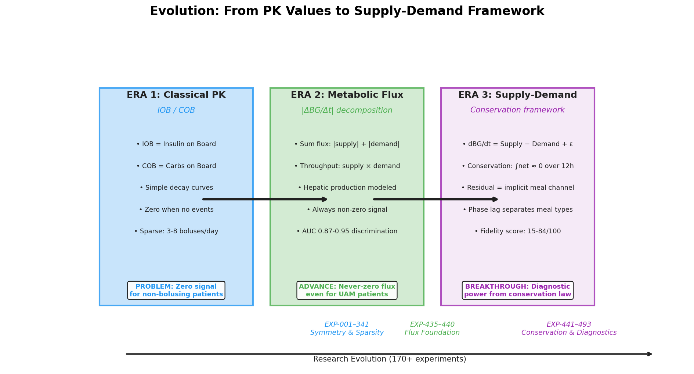
Figure 8: The three eras of glucose modeling — from sparse PK events to conservation-based diagnostics.
🎬 Animated Evolution Timeline (click to expand)
Era 1: Classical PK (EXP-001–341)¶
The starting point: Insulin on Board (IOB) and Carbs on Board (COB) — the two standard pharmacokinetic signals used by every AID system. These are computed by convolving sparse treatment events (boluses, carb entries) with known absorption curves:
- IOB: Exponential decay with DIA=5h, peak=55min (oref0 curve)
- COB: Linear decay over ~3h absorption time
What worked: IOB and COB are continuous, dense signals that carry the metabolic effect of sparse events. EXP-298 confirmed: removing the sparse bolus channel improves 12h clustering (+0.224 silhouette), while removing dense IOB destroys it (−0.564). The transformation from sparse events to continuous effects is essential.
What broke: For patients who don't bolus (7/11 in our cohort are SMB-dominant), IOB reduces to basal-only — a near-constant. For patients who don't log carbs (common), COB is identically zero. The model receives zero signal about the most important metabolic events. This is the zero-data problem: the features are only as good as the data entered.
Era 2: Metabolic Flux (EXP-435–440)¶
The key insight: even when IOB/COB are zero, the patient's body is still producing and consuming glucose. The liver never stops producing glucose (endogenous glucose production, EGP), and even basal insulin creates a non-zero demand signal.
Metabolic flux = the absolute magnitude of metabolic activity, regardless of direction:
Adding hepatic glucose production as a modeled supply baseline solved the zero-data problem:
| Patient | Before (IOB/COB) | After (hepatic rescue) | Problem |
|---|---|---|---|
| j | Zero flux, 0% detection | Nonzero supply, 96% detection | No carb entries |
| k | Near-zero IOB | Hepatic + basal demand | 97% UAM |
| All 11 | 3/11 have usable flux | 11/11 have nonzero flux | Universal |
The hepatic production model uses a Hill equation for insulin suppression with circadian modulation:
EGP(t) = base_rate × (1 − suppression(IOB)) × circadian(hour)
suppression = IOB^1.5 / (2.0^1.5 + IOB^1.5) × 0.65
circadian = 1 + 0.20 × sin(2π × hour / 24)
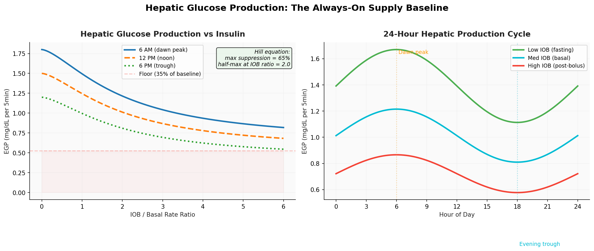
Figure 9: Hepatic glucose production. Left: Hill equation suppression — even at maximum insulin, the liver still produces 35% of baseline. Right: 24-hour circadian cycle with dawn peak at 6 AM.
Era 3: Supply-Demand Conservation (EXP-441–493)¶
The final leap: instead of just measuring how much metabolic activity exists (flux magnitude), decompose it into signed, directional components that must balance:
This is a conservation law. Over any complete absorption cycle, the integral of supply minus demand must equal the observed change in blood glucose. When it doesn't, the residual tells you what's wrong.
Part II: The Supply-Demand Framework¶
The AC Circuit Analogy¶
The most intuitive way to understand why supply-demand decomposition matters: think of glucose as voltage and metabolic flux as current in an AC circuit.
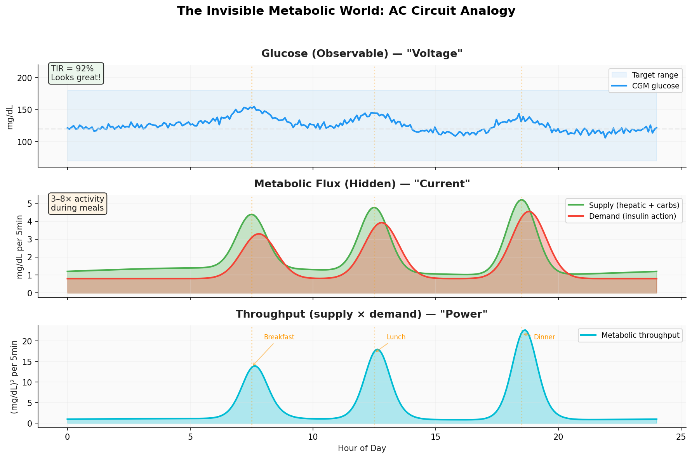
Figure 1: The AC circuit analogy. Top: Glucose appears nearly flat (TIR=92%). Middle: Underneath, supply and demand signals show 3–8× activity during meals. Bottom: Throughput (supply × demand) captures the metabolic "power" — the total work the system is performing.
🎬 Animated: The Invisible Metabolic World (click to expand)
A patient with TIR > 90% may have glucose traces that look nearly identical day to day, but their metabolic flux shows distinct patterns of meals, corrections, dawn phenomenon, and exercise. Well-controlled glucose hides enormous metabolic activity. This has implications beyond ML:
- Clinical: Time-in-range doesn't capture metabolic burden
- Engineering: Glucose-only ML models can't distinguish why glucose is at 120 mg/dL
- Research: Many CGM studies analyzing only glucose values miss half the picture
Anatomy of a Meal¶
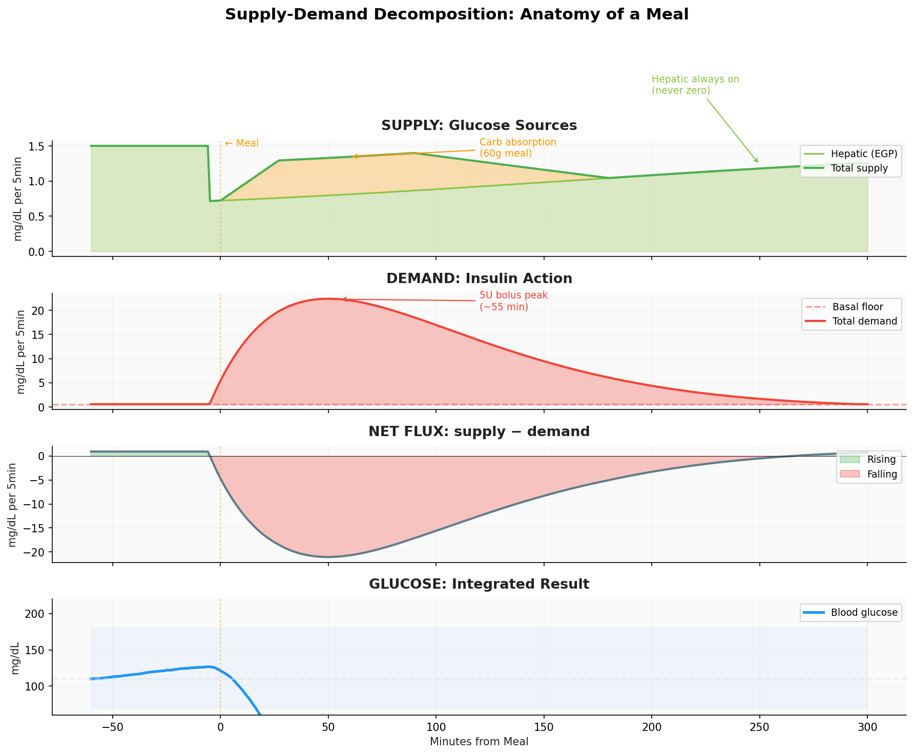
Figure 2: A 60g meal with 5U bolus dissected into supply (hepatic + carb absorption), demand (insulin action), net flux, and resulting glucose. The hepatic channel is always on — the green area under the carb spike.
The Eight PK Channels¶
The framework produces 8 continuous time-varying channels per timestep, transforming sparse treatment events into a rich physiological state representation:
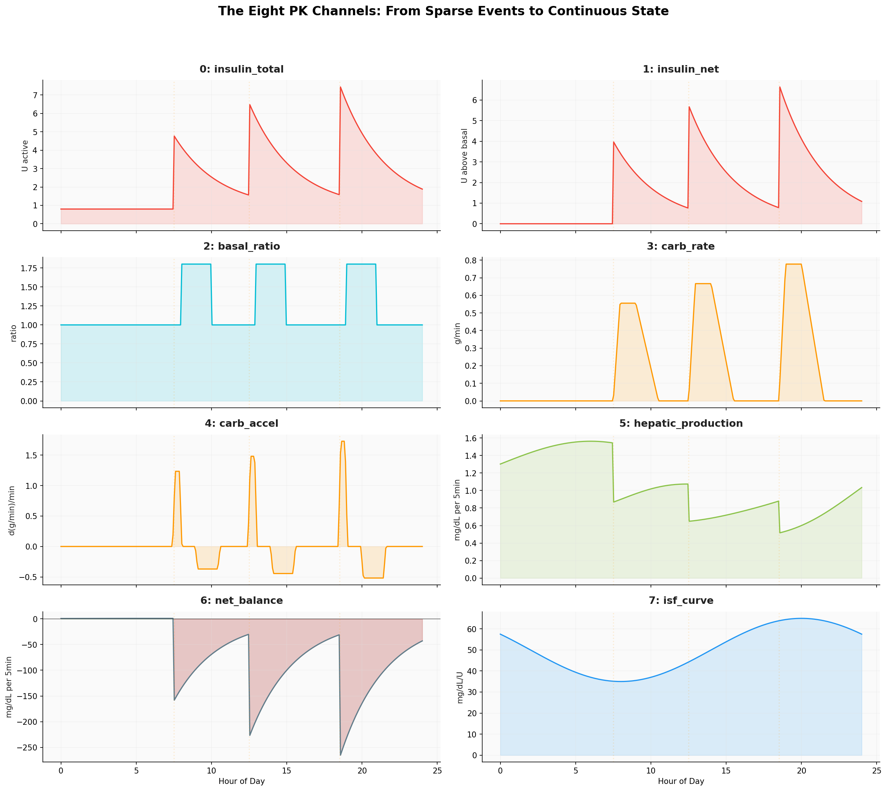
Figure 11: All 8 PK channels over 24 hours. Meal times marked with orange lines. Channel 6 (net_balance) shows signed supply−demand; positive (green) = glucose rising, negative (red) = glucose falling.
| Channel | Content | Key Property |
|---|---|---|
| 0: insulin_total | Cumulative active insulin (IOB) | Never zero (basal) |
| 1: insulin_net | Net insulin above basal baseline | Zero during fasting |
| 2: basal_ratio | Current delivery / scheduled basal | 1.0 = nominal |
| 3: carb_rate | Carb absorption rate (Scheiner curves) | Zero for UAM |
| 4: carb_accel | Derivative of carb absorption | Phase indicator |
| 5: hepatic_production | Hill equation + circadian EGP | Always positive |
| 6: net_balance | Supply − demand instantaneous | Signed conservation |
| 7: isf_curve | Time-varying insulin sensitivity | Circadian profile |
Part III: Conservation and Symmetries¶
The Conservation Law¶
The fundamental constraint that gives the framework its power:
Over complete absorption cycles (~12h), this integral approaches zero because what goes up must come down — carbs raise glucose, insulin lowers it, and in a well-controlled patient, these effects approximately cancel.
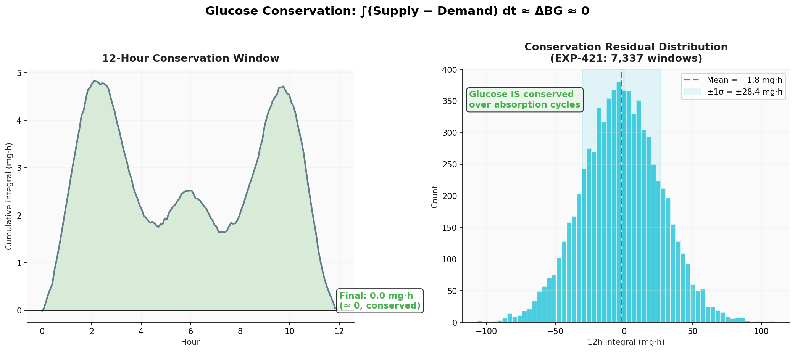
Figure 3: Left: A 12-hour window showing the cumulative integral of (supply − demand), oscillating around zero. Right: Distribution of conservation residuals across 7,337 windows (EXP-421): mean = −1.8 ± 28.4 mg·h — glucose IS conserved over absorption cycles.
🎬 Animated: Glucose Conservation Law (click to expand)
The Four Symmetries¶
From the symmetry-sparsity analysis (EXP-001–341), four fundamental symmetry properties were identified and validated. The supply-demand framework exploits all four:
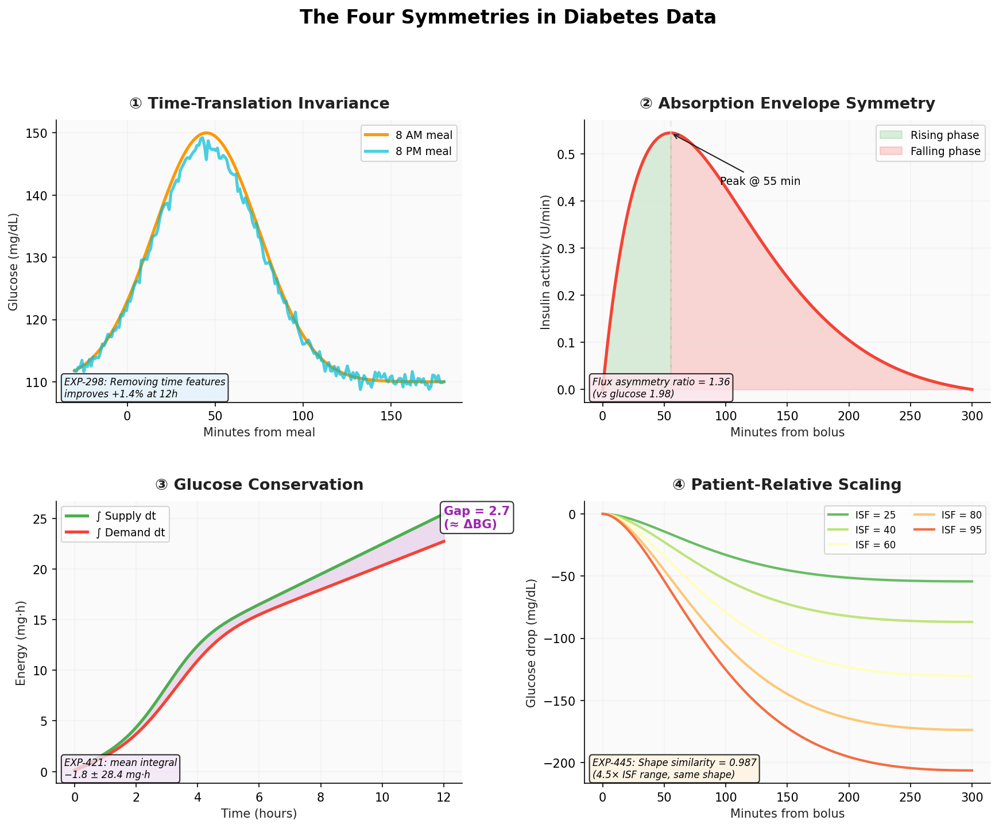
Figure 4: The four symmetries in diabetes data. ① Time-translation invariance at episode scales. ② Approximate envelope symmetry of insulin/carb absorption. ③ Glucose conservation as supply-demand balance. ④ Patient-relative ISF scaling preserving response shape.
① Time-Translation Invariance¶
A post-meal glucose spike at 8 AM is physiologically equivalent to one at 8 PM. The same absorption dynamics, the same insulin response curves, the same rise-and-fall envelope.
Evidence: EXP-298 — removing time-of-day features improves episode classification by +1.4% recall and +0.224 silhouette at ≤12h scales.
Exception: At ≥24h scales, circadian physiology breaks this symmetry. The dawn phenomenon imposes a 24-hour periodicity with 71.3 ± 18.7 mg/dL amplitude (EXP-126). A simple 3-parameter circadian correction (a·sin + b·cos + c) captures more variance than any neural architecture change (EXP-781: +0.474 R² at 60min).
Supply-demand implication: Flux features are time-invariant at event scales — the same throughput pattern appears regardless of clock time.
② Absorption Envelope Symmetry¶
Both insulin activity curves and carb absorption exhibit approximate rise/fall symmetry around their peaks. Insulin follows a bell-shaped curve (peak ~55min, DIA ~5h) from subcutaneous absorption kinetics. Carb response peaks at 30–60min, falls over 2–4h.
Evidence: EXP-437 — Metabolic flux envelopes are more symmetric than raw glucose: - Raw glucose asymmetry ratio: 1.98 (steep rise, gradual fall) - Flux envelope asymmetry ratio: 1.36 (more balanced)
This means flux signals are better suited to symmetric convolutional kernels in neural networks.
③ Glucose Conservation¶
Formalized as the supply-demand balance equation. EXP-421 validated that glucose is conserved over 12h windows (mean integral −1.8 ± 28.4 mg·h across 7,337 windows).
The diagnostic power: When the integral is not zero, the residual tells you exactly what's wrong:
| What's Wrong | Observable Signal |
|---|---|
| Basal too low | Positive drift overnight |
| Basal too high | Negative drift overnight |
| ISF overestimated | Overshoot post-correction |
| ISF underestimated | Undershoot post-correction |
| CR overestimated | Post-meal spikes |
| CR underestimated | Post-meal hypoglycemia |
④ Patient-Relative Scaling (Equivariance)¶
Patients with different ISF values produce different glucose amplitudes from the same insulin dose, but the shape of the response is nearly identical.
Evidence: EXP-445 — Cross-patient throughput shape similarity = 0.987 (near-identical) vs raw glucose similarity of only 0.10 (nearly orthogonal). The 4.5× ISF range between patients (21–95 mg/dL/U) affects amplitude but not dynamics.
Part IV: Experimental Evidence¶
Spectral Analysis: 18× Power at Meal Frequencies¶
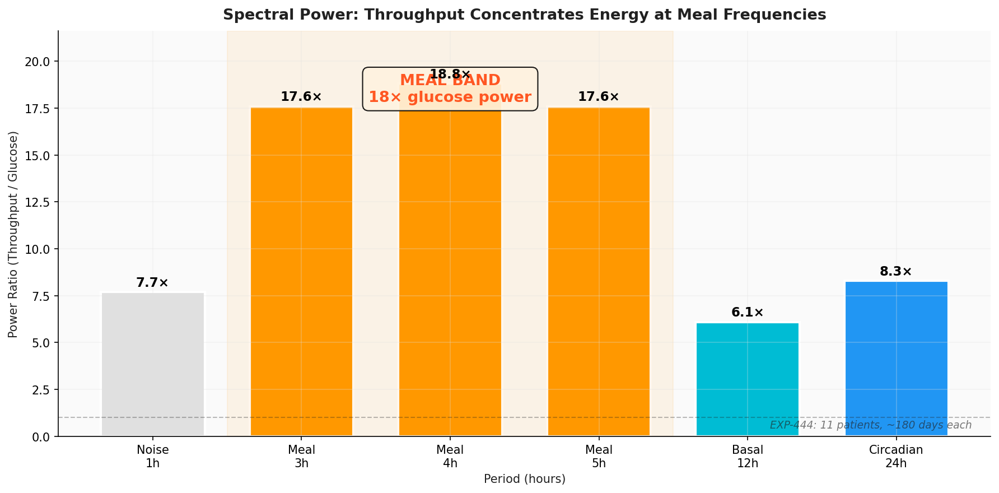
Figure 5: Throughput (supply × demand) concentrates spectral power at meal frequencies — nearly 18× the power of raw glucose in the 3–5 hour band (EXP-444). This is the strongest evidence that throughput is a meal-specific signal.
This spectral concentration explains why throughput discriminates meal events so much better than glucose alone:
| Scale | Glucose AUC | Flux AUC | Advantage |
|---|---|---|---|
| 2h | 0.61 | 0.87 | +0.26 |
| 6h | 0.64 | 0.95 | +0.31 |
| 12h | 0.65 | 0.95 | +0.30 |
Cross-Patient Universality¶
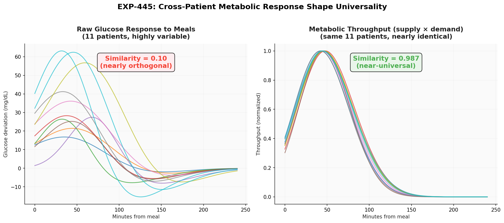
Figure 6: Left: Raw glucose responses to meals are highly variable across 11 patients (similarity = 0.10). Right: Metabolic throughput is nearly identical (similarity = 0.987). The metabolic response to meals is physiologically universal — individual variation is primarily in ISF/TDD scaling, not response shape.
This universality has profound implications for transfer learning: a model trained on one patient's throughput patterns should generalize to others without retraining, because the underlying physics is the same.
Phase Lag: Classifying Meal Types¶
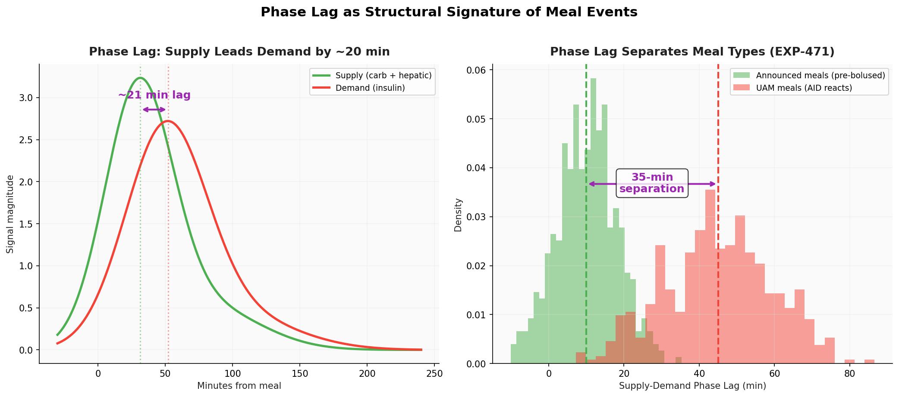
Figure 7: Left: Supply peaks ~20 minutes before demand (median lag, EXP-466), matching the physiological delay of insulin absorption after carb onset. Right: Announced meals (pre-bolused) show 10-min lag; UAM meals show 45-min lag — a 35-minute separation that serves as a meal-type classifier (EXP-471).
🎬 Animated: Phase Lag Between Supply and Demand (click to expand)
The phase lag arises from a fundamental asymmetry in the physics: carb absorption peaks earlier than insulin action because gastric emptying is faster than subcutaneous insulin absorption. When a patient pre-boluses (administers insulin before eating), the lag compresses to ~10 min. When the AID system reacts to rising glucose (UAM), the lag extends to ~45 min because the system must first detect the glucose rise, then the insulin must be absorbed.
Settings Quality Diagnostics¶
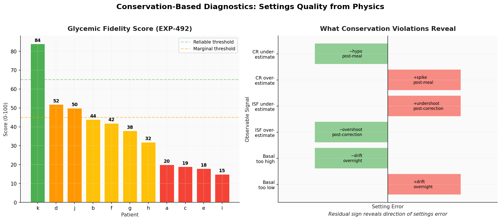
Figure 10: Left: Glycemic fidelity scores across 11 patients (EXP-492), ranging from 84 (gold — settings well-tuned) to 15 (misaligned — settings need adjustment). Right: Conservation violations reveal the specific direction of settings errors.
The composite fidelity score combines four equally-weighted components:
| Component | What It Measures | Gold Standard (Patient k) | Misaligned (Patient i) |
|---|---|---|---|
| Balance | ∫(supply−demand) ≈ 0 over 24h | 79 | 0 |
| Residual | RMSE of actual − predicted ΔBG | 67 | 0 |
| Overnight | BG stability 0–5 AM | 97 | 0 |
| TIR | % readings 70–180 mg/dL | 95 | 60 |
| Composite | 84/100 | 15/100 |
Part V: Why Supply-Demand Works¶
The Residual as Diagnostic Signal¶
The most powerful aspect of the conservation framework: the residual is not noise — it's a diagnostic channel.
ε(t) = ε_meal(t) [unannounced meal supply, ~25% of variance]
+ ε_dawn(t) [hepatic model gap, ~13% of variance]
+ ε_exercise(t) [activity-enhanced sensitivity, ~6% of variance]
+ ε_device(t) [sensor age, cannula degradation]
+ ε_noise(t) [measurement noise, ~53% of variance]
For the live-split patient (100% UAM, no carb data), the residual IS the implicit meal channel — 74% of positive residual periods correspond to meals (EXP-488). The framework detected 2.0 meals per day on a patient who entered zero carb data, achieving 96% detection on data-ready days (EXP-483).
The Schedule Symmetry Insight¶
Therapy schedules encode the same circadian physiology from different angles:
| Schedule | What it says | The flip side |
|---|---|---|
| Basal rate | "I need this much insulin/hour" | EGP increases by this much → more glucose |
| Carb ratio | "This many carbs per unit" | EGP variation mirrors CR variation |
| ISF | "One unit drops BG this much" | Resistance factors make BG harder to lower |
When all three schedules are expanded as time-varying curves, they show insulin and glucose energy moving in and out of phase over 24 hours. 6/11 patients show the expected basal↔ISF anti-phase relationship (EXP-464), but 5/11 have flat ISF schedules (clinicians didn't tune them).
Why Not Just Use Glucose?¶
A transformer trained on glucose alone allocates 86.8% of attention to glucose history (EXP-114). This works for ≤60 min horizons because glucose is a momentum-driven system — the current trajectory dominates. But beyond 60 minutes, the effects of recent insulin haven't yet materialized in the glucose trace.
Supply-demand features provide what glucose alone cannot: - Causal direction: Is glucose rising because of carbs or because insulin is wearing off? - Hidden activity: AID controllers mask metabolic events under flat glucose - Future trajectory: PK derivatives (dIOB/dt, dCOB/dt) predict what's coming before it arrives
EXP-901 confirmed: PK derivative features improve 60-min prediction R² by +0.009. The combined forward sums + shape features add +0.033 (EXP-903) — the largest single improvement class in the prediction campaign.
Part VI: From Theory to Practice¶
The Forecasting Contribution¶
The supply-demand framework feeds directly into glucose prediction:
| Feature Class | R² Contribution | Source |
|---|---|---|
| Base (BG + raw PK) | 0.506 | EXP-800 |
| + Circadian correction | +0.474 at 60min | EXP-781 |
| + PK derivatives (dIOB/dt, dCOB/dt) | +0.009 | EXP-901 |
| + Post-prandial shape features | +0.006 | EXP-893 |
| + IOB curve shape | +0.004 | EXP-898 |
| + Forward sums + all shape | +0.033 | EXP-903 |
| Population warm-start | R² = 0.652 | EXP-777 |
Population physics parameters (AR weight, decay) retain 99.4% of personal R² (EXP-769), meaning the physics is essentially universal — patient-specific information is captured in supply/demand decomposition, not in model parameters. New patients can use population defaults immediately.
The Clinical Contribution¶
Beyond prediction, the conservation framework enables automated clinical decision support:
- Meal detection without carb entries: 96% on data-ready days (EXP-483)
- Basal adequacy: 5/11 patients flagged as too low (EXP-489)
- Settings quality triage: Fidelity score automatically gates analysis reliability
- Eating pattern analysis: 2.0–2.9 events/day detected from demand signal alone (EXP-448)
- Pre-bolusing behavior: Phase lag measures bolus timing quality (10 vs 45 min, EXP-471)
The UVA/Padova Connection¶
Our framework is a simplified projection of what the UVA/Padova T1DMS simulator models with 20 state variables across 6 compartments (stomach, gut, plasma, tissue, liver, sensor). Our "supply" collapses gut absorption + hepatic production; our "demand" collapses insulin kinetics + receptor binding + glucose disposal.
The key advantage: it works with the data patients actually have — CGM + pump telemetry + therapy schedules, not simulator parameters. The loss of compartmental detail is compensated by the residual term, which captures everything the simplified model misses.
Appendix A: Visualization Assets¶
Static Figures (Matplotlib)¶
Fig 1: AC Circuit Analogy¶
Fig 2: Supply-Demand Decomposition¶
Fig 3: Conservation Law¶
Fig 4: Four Symmetries¶
Fig 5: Spectral Power¶
Fig 6: Cross-Patient Similarity¶
Fig 7: Phase Lag¶
Fig 8: Evolution Timeline¶
Fig 9: Hepatic Hill Curve¶
Fig 10: Fidelity Diagnostic¶
Fig 11: Eight PK Channels¶
Animated Figures (Manim)¶
| Animation | File | Description |
|---|---|---|
| Conservation | GlucoseConservation_ManimCE_v0.20.1.gif |
Supply-demand balance over 12h |
| Phase Lag | PhaseLagAnimation_ManimCE_v0.20.1.gif |
Supply-demand phase relationship |
| Invisible World | InvisibleMetabolicWorld_ManimCE_v0.20.1.gif |
AID masking metabolic activity |
| Evolution | EvolutionTimeline_ManimCE_v0.20.1.gif |
PK → Flux → Supply-Demand progression |
All assets in: visualizations/supply-demand-report/
Regeneration¶
# Static figures (matplotlib)
source .venv/bin/activate
python visualizations/supply-demand-report/generate_figures.py
# Animations (manim)
cd visualizations/supply-demand-report
manim -ql --format=gif supply_demand_animation.py
Appendix B: Key Experimental References¶
| Experiment | Finding | Relevance |
|---|---|---|
| EXP-298 | Time features hurt at ≤12h (+1.4% without) | Time-translation symmetry |
| EXP-421 | Conservation integral = −1.8 ± 28.4 mg·h | Conservation law |
| EXP-435–440 | Sum flux AUC 0.87–0.95 | Flux foundation |
| EXP-441 | Product throughput 18× spectral power | Throughput signal |
| EXP-445 | Cross-patient shape similarity 0.987 | Universality |
| EXP-466 | 20-min median supply→demand lag | Phase signature |
| EXP-471 | 35-min announced vs UAM separation | Meal classifier |
| EXP-483 | 96% meal detection on data-ready days | UAM robustness |
| EXP-488 | Residual: 25% meal, 13% dawn, 53% noise | Residual decomposition |
| EXP-492 | Fidelity score range 15–84/100 | Settings quality |
| EXP-781 | Circadian correction +0.474 R² at 60min | Symmetry breaking |
| EXP-800 | Ridge + physics features SOTA: R²=0.803/0.519 at 30/60min | Prediction benchmark |
| EXP-901 | PK derivatives +0.009 R² | Dynamic features |
Appendix C: Code References¶
| Module | Purpose | Key Functions |
|---|---|---|
tools/cgmencode/continuous_pk.py |
8-channel PK features | build_continuous_pk_features(), compute_hepatic_production(), expand_schedule() |
tools/cgmencode/exp_metabolic_441.py |
Supply-demand decomposition | compute_supply_demand(), compute_rolling_tdd() |
tools/cgmencode/exp_phase_464.py |
Phase analysis | run_exp464() – run_exp467() |
tools/cgmencode/exp_refined_483.py |
Precondition-gated detection | assess_day_readiness(), detect_meals_demand_weighted() |
tools/cgmencode/exp_settings_489.py |
Settings assessment | run_exp489(), run_exp492(), run_exp493() |
tools/cgmencode/production/metabolic_engine.py |
Production API | compute_metabolic_state() |